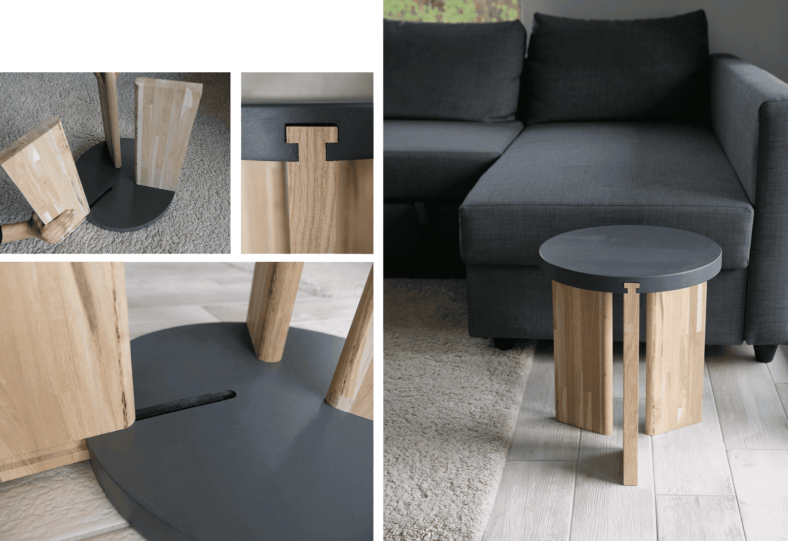
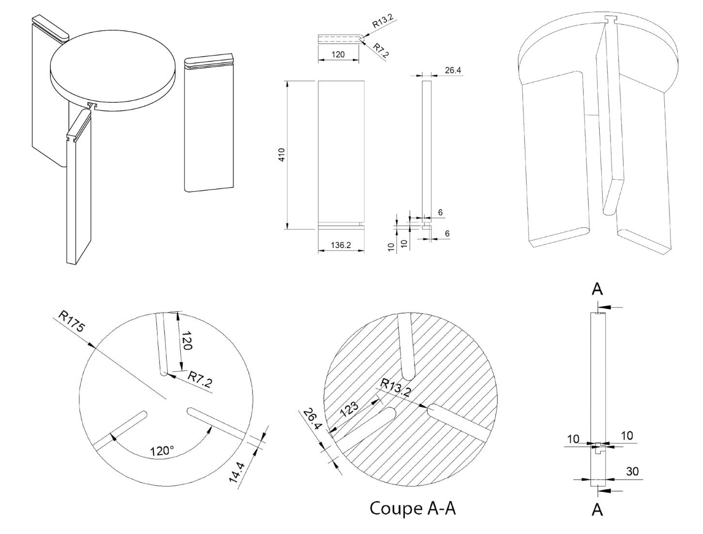

For this project, we were asked to design a stool in teams of two. I proposed creating a stool that could be assembled without any tools. I found a partner that had experience in wood manufacturing and laser cutting. In one day we had the main concept and few weeks later the refined and finalized object.
After brainstorming several concepts, we finalized a three-legged stool design. I drafted the pieces and modeled the stool in CATIA, ensuring it could be assembled easily and remain stable.
Below is the CATIA design of the stool pieces:
The stool was manufactured using laser cutting and woodworking techniques. After assembly, we applied paint as a final touch to enhance the finish and aesthetics.
The project was a success, and we received a 6/6 grade at ECAL for our design, execution, and innovation.
Fun fact - we became friends and give each other the stool each year to make sure we stay in touch!